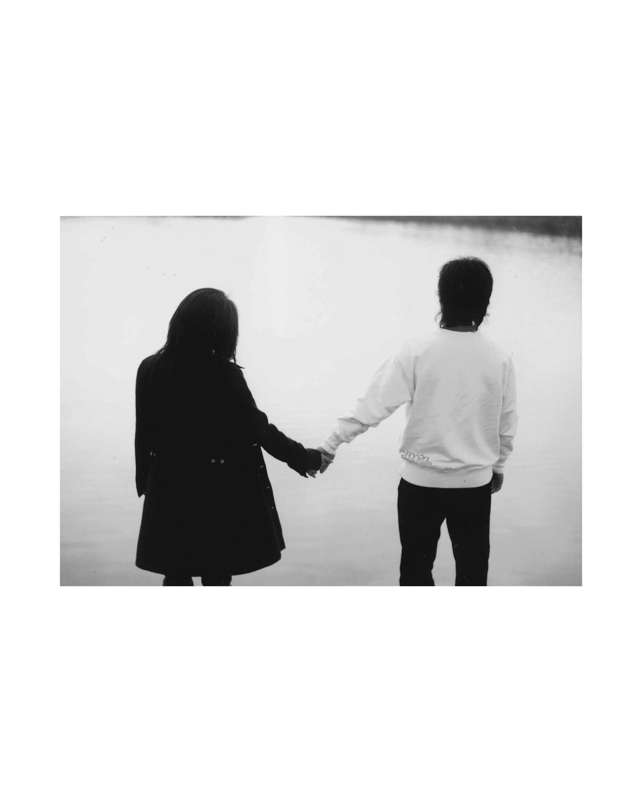
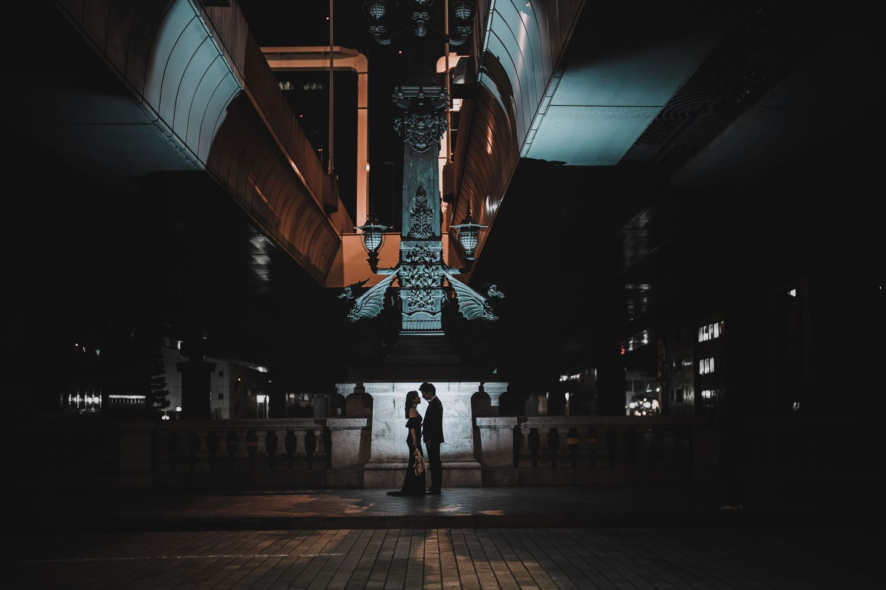

ABOUT
PHOTO58
Wedding photographer / Goya Osada
Photography for Adventurous Souls & Sense of Unity
二人が過ごした時間、その場所、その日の空気。写真を見返したときに、またその時間へ戻れるようなウェディングフォトを。
高知・四国を拠点に、全国のロケーションへ伺います。




Wedding photographer / Goya Osada
二人が過ごした時間、その場所、その日の空気。写真を見返したときに、またその時間へ戻れるようなウェディングフォトを。
高知・四国を拠点に、全国のロケーションへ伺います。

